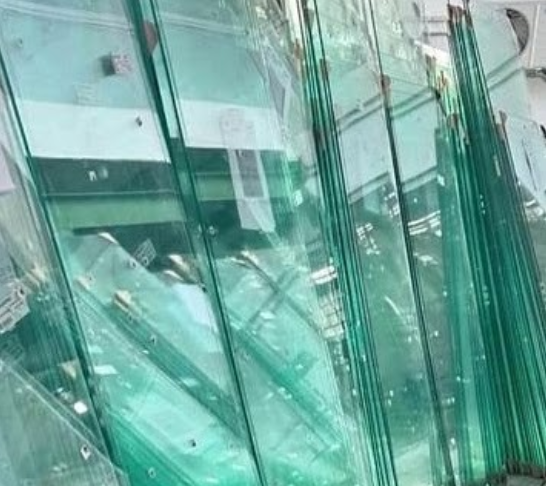

Esquadrias em Alumínio e Vidro de Alto Padrão
Soluções modernas, seguras e sob medida para sua obra
Solicitar OrçamentoQuem Somos
Somos uma empresa com especialização em Manutenção e Produção de esquadrias de alumínio e vidro temperado, atuamos no mercado do Vale do Itajaí, Blumenau e região e agora estamos expandindo para o litoral da Costa Verde e Mar. Nosso objetivo é sermos um negócio com comprometimento e qualidade nos serviços prestados ao cliente. Trabalhamos com Manutenção de janelas, portas, portões de correr e basculante, box para banheiro e linhas de vidro temperado. Embora estejamos sempre em evolução, a confiança em nosso serviço é o que faz alcançamos nossa metas. Neste site, estaremos mantendo atualizado e com varias dicas. Curta nosso Instagran: @mjsresquadrias
Confira as diferenças de Linhas de Esquadrias
Linha Suprema
Tem perfis de 25 mm e suporta vidros de 4 a 6 mm. É mais acessível e indicada para projetos menores, como janelas de banheiro, cozinha e lavanderia, e portas de giro de áreas molhadas.

Linha Gold
Tem perfis de 32 mm e suporta vidros de até 21 mm. É mais indicada para portas e janelas em grandes aberturas, fachadas comerciais, edifícios altos e ambientes que exigem alta performance e resistência. A linha Gold é mais cara que a linha Suprema, pois o alumínio é vendido por quilo. Além disso, a linha Gold apresenta um melhor isolamento térmico e acústico em comparação à linha Suprema. É comum mesclar as duas linhas em um mesmo projeto.

Vidro Temperado
O vidro temperado é muito utilizado em: Janelas, Portas, Box de vidro, Construção civil, Indústria automotiva, Decoração. Algumas características do vidro temperado são: Resistência ao choque térmico, flexão, flambagem, torção e peso Pode ajudar a reduzir o custo energético e controlar a temperatura Não pode ser cortado ou furado após o processo de têmpera As bordas do vidro temperado são mais sensíveis à lapidação O vidro temperado é 100% reciclável, o que o torna uma escolha sustentável quando descartado adequadamente.
Projetos Realizados
 Lixeira de Alumínio
Lixeira de Alumínio
 Clarabóia
Clarabóia
 Porta de Corrediça
Porta de Corrediça
 Portão Sob Medida
Portão Sob Medida
Contato
📍 Endereço
Rua Exemplo, 123 – Centro
Sua Cidade – SC
🕒 Horário de Atendimento
Segunda a Sexta: 08h às 18h
Sábado e Domingo: Fechados
✉️ E-mail
mjsresquadrias@gmail.com.br